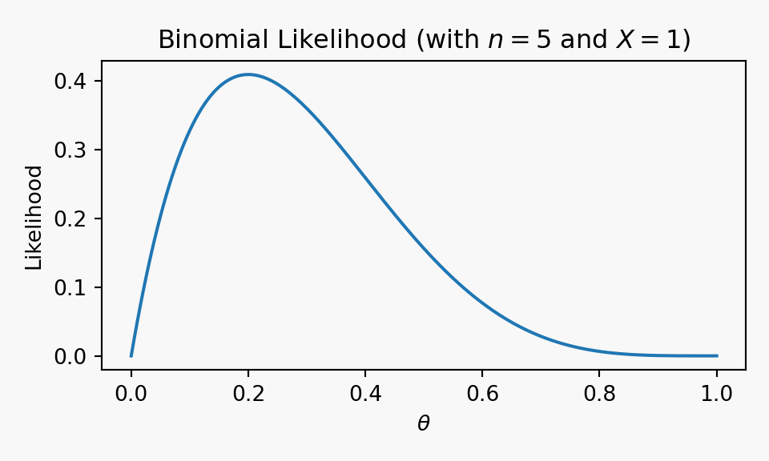

As discussed in the course introduction, Bayesian inference takes a different perspective from the frequentist approach:
In the frequentist view, the parameter \(\theta\) is fixed but unknown.
In the Bayesian view, the parameter \(\theta\) is treated as a random variable.
The randomness here does not mean that the parameter is physically fluctuating — instead, it reflects our uncertainty about its value.
6.1.1 Why is this useful?
A key advantage of Bayesian inference is that it allows us to incorporate prior information1 about the parameter.
Definition 6.1 (Prior Distribution.) Our uncertainty about \(\theta\) is represented by a probability distribution, called the prior distribution:
\[
\theta \sim \pi(\theta).
\]
Here \(\pi(\theta)\) denotes the prior density (PDF or PMF).
Example 6.1 Suppose \(\theta\) is the average exam score of students in a module. From past experience, the average score tends to be around 60, with most cohorts lying within about 10 marks of this.
We could encode this information as a Normal prior:
The likelihood\(f(\underline{x} \mid \theta)\) (information from the data).
The prior\(\pi(\theta)\) (information before seeing the data).
The denominator \(f(\underline{x})\) is a normalising constant ensuring the posterior integrates to 1.
Important✨ Big picture:
Bayesian inference updates prior beliefs about parameters using the likelihood from the data, producing the posterior distribution which represents updated uncertainty.
Let’s start with a simple example to see how this works:
Example 6.2 (Biased Coin) We consider a possibly biased coin with parameter \(\theta = \Pr(\text{Head})\). Before seeing data, we express no preference over \(\theta\in(0,1)\) via a uniform prior: \[
\theta \sim \mathrm{Uniform}(0,1) \equiv \mathrm{Beta}(1,1), \qquad \pi(\theta)=1 \ \text{for } 0<\theta<1.
\] Hence \(\mathrm{E}[\theta]=0.5\).
We toss the coin \(n=5\) times and observe \(x=1\) head. Find the posterior\(\pi(\theta\mid x)\).
TipSolution
Solution 6.1. Let \(X\) be the number of heads in \(5\) tosses. Assuming that each coin throw is independent and identically distributed, \(X\) is Binomial2: \[
X \mid \theta \sim \textrm{Bin}(5,\theta).
\] Note that there is only a single observation here: one experiment is “tossing the coin \(5\) times and seeing how many come up heads”. The probability of observing \(X=1\) is \[
f(x = 1 \mid \theta) = 5\theta(1-\theta)^4
\] If we plot this:
Show code
import matplotlib.pyplot as pltimport numpy as npimport mathdef binom_lik(theta):return5* theta * (1- theta) **4theta_grid = np.linspace(0, 1, 200)binom_lik_vals = binom_lik(theta_grid)plt.figure(figsize=(5,3))plt.plot(theta_grid, binom_lik_vals)plt.xlabel(r"$\theta$")plt.ylabel("Likelihood")plt.title("Binomial Likelihood (with $n=5$ and $X=1$)")plt.tight_layout()plt.show()

we see that this favours \(\theta\) around \(0.2\). In fact, in Example 5.4, we saw that the MLE is \(\hat{\theta} = 0.2\).
Our prior for \(\theta\) was \(\pi(\theta) = 1\), for \(0 < \theta < 1\). To update our beliefs, by conditioning on the single observation \(x=2\), we use Bayes Theorem 6.2: \[
\pi(\theta|x=1)=\frac{\pi(\theta)f(x=1|\theta)}{f(x=1)} = \frac{1 \times 5\theta(1-\theta)^4}{f(x=1)}, \quad 0 < \theta < 1.
\] To compute the denominator, \(f(x=1)\), we use the law of total probability 1.3: \[
\begin{align*}
f(x=1) &=\int_\Theta\pi(\theta)f(x=1\, |\,\theta)\,d\theta = \int_0^1 1\times 5\theta(1-\theta)^4\,d\theta \\
&=\int_0^1 \theta\times 5(1-\theta)^4\,d\theta =\left[-(1-\theta)^5\,\theta\right]^1_0
+\int_0^1 (1-\theta)^5\,d\theta \\
&=0 + \left[-\frac{(1-\theta)^6}{6}\right]^1_0 =\frac{1}{6}.
\end{align*}
\]
Therefore, the posterior density is (for \(0<\theta<1\)): \[
\begin{align*}
\pi(\theta|x=1)&=\frac{\pi(\theta)f(x=1|\theta)}{f(x=1)} =\frac{5\theta(1-\theta)^4}{1/6}\\
&=30\,\theta(1-\theta)^4 =\frac{\theta(1-\theta)^4}{\mathrm{B}(2,5)},\quad\quad 0<\theta<1,
\end{align*}
\] and so the posterior distribution is \(\theta|x=1\sim \textrm{Beta}(2,5)\). This distribution has its mode at \(\theta=0.2\), and mean at \(\mathrm{E}[\theta|x=1]=2/7=0.286\).
The main difficulty in calculating the posterior distribution was in obtaining the \(f(x)\) term. However, in many cases we can recognise the posterior distribution without the need to calculate this constant term (constant with respect to \(\theta\)). In this example, we can calculate the posterior distribution as \[
\begin{align*}
\pi(\theta|\underline{x})&\propto\pi(\theta)f(x=1|\theta) \\
&\propto 1\times 5\theta(1-\theta)^4,\quad\quad 0<\theta<1 \\
&=k\theta(1-\theta)^4,\quad\quad 0<\theta<1.
\end{align*}
\]
As \(\theta\) is a continuous quantity, what we would like to know is what continuous distribution defined on \((0,1)\) has a probability density function which takes the form \(k\theta^{g-1}(1-\theta)^{h-1}\). The answer is the \(\textrm{Beta}(g,h)\) distribution. Therefore, choosing \(g\) and \(h\) appropriately, we can see that the posterior distribution is \(\theta|x=1\sim \textrm{Beta}(2,5)\).
Summary:
It is possible that we have a biased coin. If we suppose that all values of \(\theta=\text{Pr(Head)}\) are equally likely and then observe 1 head out of 5, then the most likely value of \(\theta\) is 0.2 — the same as the most likely value from the data alone (not surprising!). However, on average, we would expect \(\theta\) to be around 0.286. Uncertainty about \(\theta\) has changed from a (prior) standard deviation of 0.289 to a (posterior) standard deviation of 0.160. The changes in our beliefs about \(\theta\) are more fully described by the prior and posterior distributions shown in Figure 6.1.
mDomain = [0,1]pdfXs = d3.scaleLinear().domain(mDomain).ticks(200) // 201 points including 0 and 1// PDFs (closed-form)functionpriorPDF(x) { return (x >0&& x <1) ?1:0; }functionposteriorPDF(x) { return (x >0&& x <1) ?30* x * (1- x) **4:0; }// Data (use the scalar x from map!)prior = pdfXs.map(x => ({ x,y:priorPDF(x),which:"Prior Beta(1,1)" }))post = pdfXs.map(x => ({ x,y:posteriorPDF(x),which:"Posterior Beta(2,5)" }))
Figure 6.1: Prior and posterior distributions for the coin bias parameter \(\theta=\Pr(\text{Head})\) after observing 1 head in 5 tosses. The posterior is more concentrated, reflecting reduced uncertainty about \(\theta\) compared to the uniform prior
Example 6.3 Consider an experiment to determine how good a music expert is at distinguishing between pages from Haydn and Mozart scores. Let \(\theta=\mathrm{Pr}(\text{correct choice})\). Suppose that, before conducting the experiment, we have been told that the expert is very competent. In fact, it is suggested that we should have a prior distribution which has a mode around \(\theta=0.95\) and for which \(\mathrm{Pr}(\theta<0.8)\) is very small. We choose \(\theta\sim \textrm{Beta}(77,5)\), with probability density function \[
\pi(\theta)=128107980\,\theta^{76}(1-\theta)^4,\quad\quad 0<\theta<1.
\] A graph of this prior density is given as follows:
Prior distribution. In Bayesian inference, the prior represents our beliefs about the parameter \(\theta\)before seeing any data. It is written as a probability distribution \(\pi(\theta)\), which can be based on previous studies, expert knowledge, or simply chosen to reflect uncertainty (e.g. a flat prior).↩︎
Binomial distribution. If we assume each coin throw \(C_i\) is an i.i.d. \(\textrm{Bernoulli}(\theta)\) trial with a \(1\) representing a heads landing, and a \(0\) representing a tails, the total number of heads out of \(5\) is \(X = C_1 + C_2 + C_3 + C_4 + C_5\). Therefore: \[
X \mid \theta \sim \textrm{Bin}(5,\theta).
\]↩︎